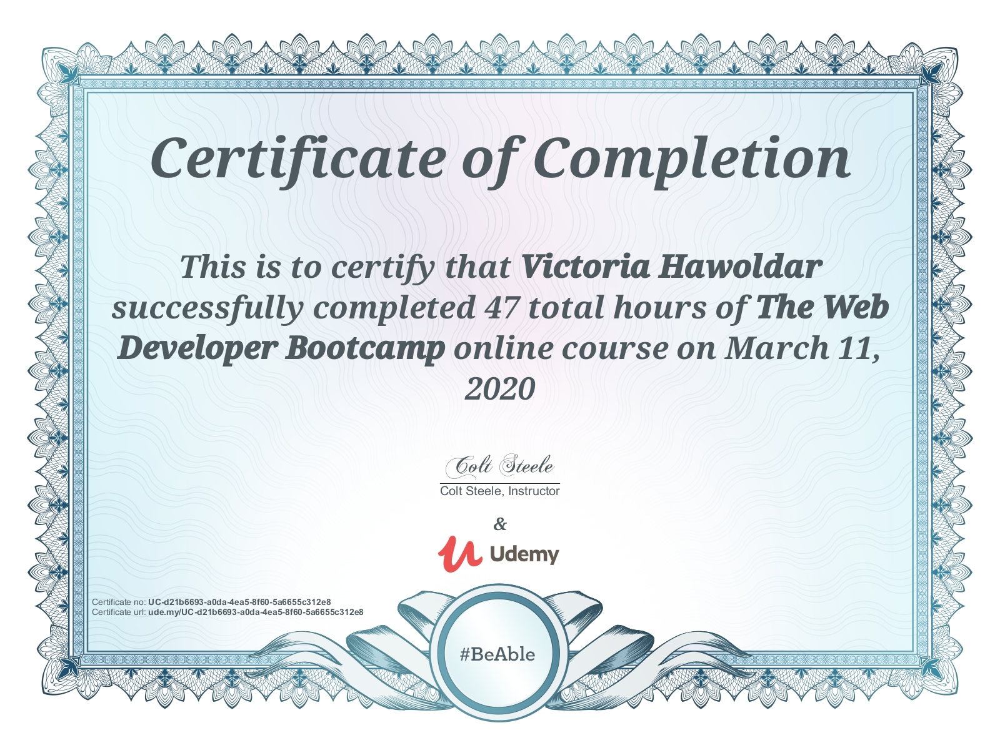
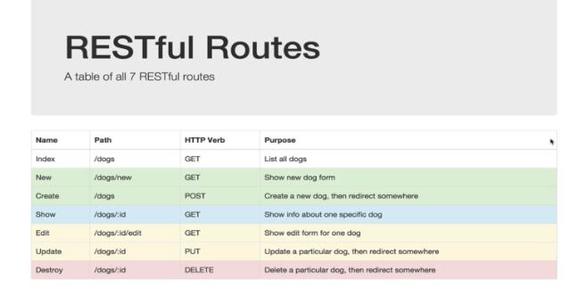
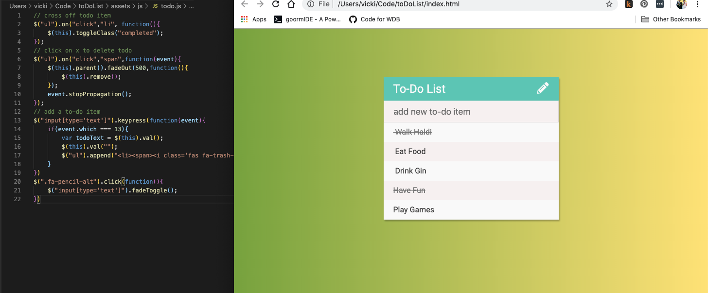
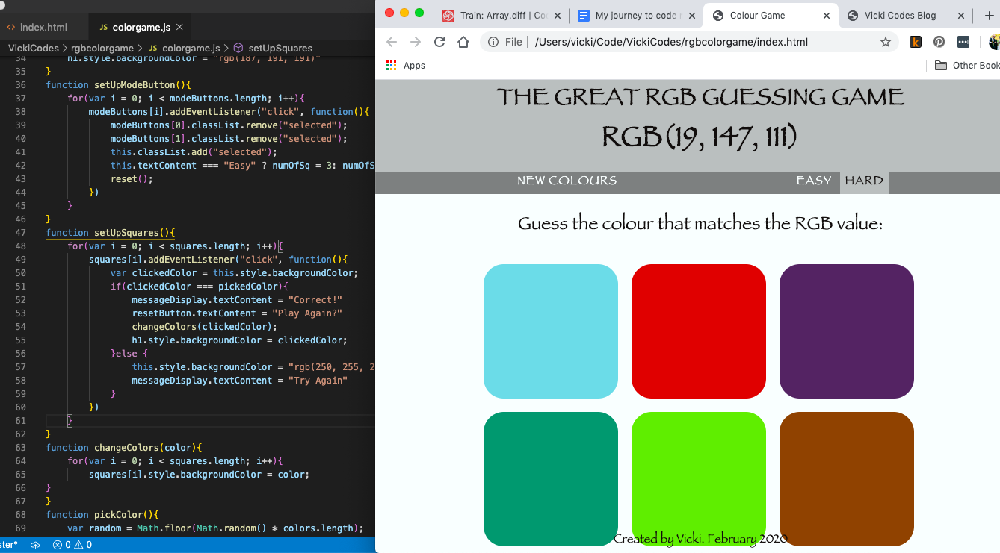
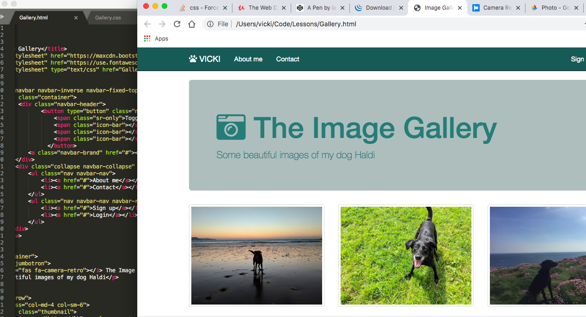
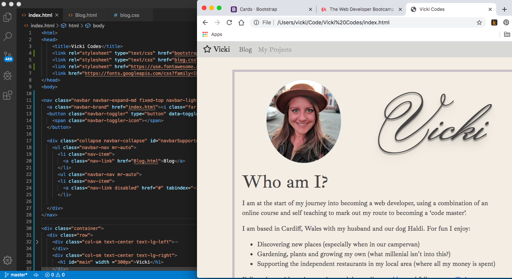
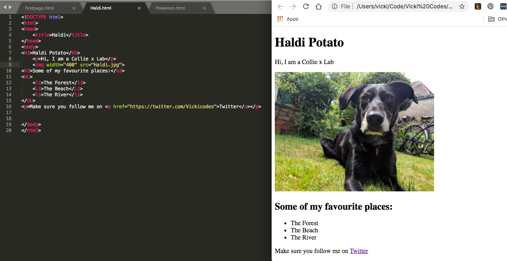
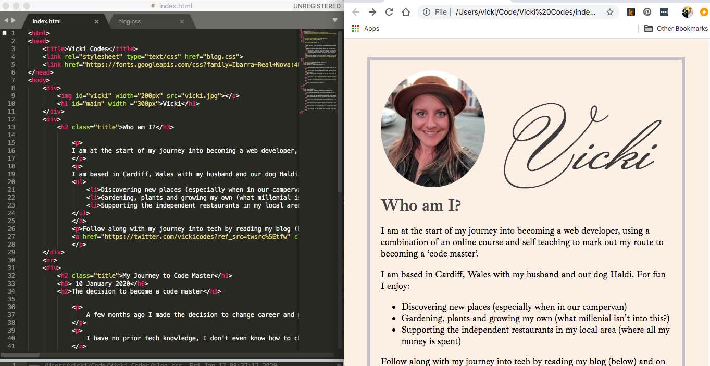

Wahoo!! I did it!! I am so unbelievably proud of myself!
After learning about GIT I have deployed my very first application Team V’s Campsite Reviews If you had told me when I started that I would have an app of this size up and running in 2 months I would not have believed you, but here it is! I sent the app over to a friend for some feedback and when he suggested an improvement I was able to implement it without looking up how. There was a point in this course when I felt that I would never get it, that I would always need to follow along or ask for help or need to be guided to implement anything, so to have been able to implement a solution on my own was an amazing feeling!
My application is far from perfect and there are many more features that I can/want to add but considering I have been coding for 2 months I think I have done an amazing job!
The course may be over but the learning isn't going to stop there. I have started a video course by Free Code Camp about PostgreSQL I really recommend the course as Nelson explains everything very clearly. I plan on using the knowledge I gain to improve this blog site.
I have also signed up to another UDEMY course The Modern JavaScript Bootcamp course (2020). I have chosen to focus on JavaScript rather than another language for 2 reasons, I have already gained an understanding of it and so have a good base from which to build from. It is also one of the most popular languages out there and so should make me more desirable to prospective employers.
Before I start my new course though I have a few projects that I have started on and want to finish up so that I can add them to my portfolio which is my plan for next week.
After the rollercoaster of last week this week has been a lot better. I started the week learning about User Authentication using PassportJS and then used it in conjunction with Mongodb to set up users on my Campsite Reviews app. I love how Passport takes something as important as password security and makes it simple to implement in apps.
I then went on to learn about RESTful routing and CRUD actions and why it is important to have this consistency on apps to make for a better developer and user experience.
The remainder of the week was then spent working on my Campsite reviews app, I used bootstrap to make it look nicer and improve the UI, it now has a landing page, an index which shows all the campsites in the database then a show page which give more detail for each campsite. The site has register and login routes, which gives a user the ability to add a new campsite or add a comment to an existing campsite. My favorite bit is that it is a dynamic site, meaning that what you see is dependent on whether you are logged in or not (e.g. the add a new campsite or edit button).
I am really surprised with just how quickly I am progressing and how far I have come in such a short space of time. If I get my head down and work hard I should have completed the course next week, which would be amazing! At the start of the journey I was told that it takes a while to feel like you are learning, well everyday now I feel I have learnt (and understood) something new. I gave myself a target of 1 year to learn before I can apply for a job. I have a feeling that my first job application will be much sooner than that.
Well this week has been a bit of a rollercoaster ride, some things have gone amazingly and others have gone horribly! But thankfully I am ending the week on a high.
At the beginning of the week I felt myself losing momentum with the completion of my online course and so I thought, to give myself a bit of a boost, it might be a good idea to do a few coding challenges that can be found online... I was not boosted!
I stuck with easy mode and although I found the first 2 challenges hard I was able to complete them on my own, the third challenge was something else, it was called Letter Changes and the question asked:
Have the function LetterChanges(str) take the str parameter being passed and modify it using the following algorithm. Replace every letter in the string with the letter following it in the alphabet (ie. c becomes d, z becomes a). Then capitalize every vowel in this new string (a, e, i, o, u) and finally return this modified string. Example: ("hello world" becomes "Ifmmp xpsmE").
I approached the challenge the same way I approached the others, I broke the problem down and started writing the parts that I knew the answer for, then I took to researching the rest. I actually found the complete answer to the problem online and I could have just used that, but it is important to me that I understand how and why the solution works; that is where I seemed to hit a brick wall.
The documentation I read confused me and the more I read the less it all made sense. At this point I closed everything on my computer down and had no intention of going back to it! One of the biggest problems I am facing with learning alone is feeling like I am the only one that finds this hard, somedays I just feel so stupid because I am not getting it.
I did come back to the problem, and with Vij’s support I was able to create my own solution that I actually understood and would be able to create again even if I was given a different context. Sometimes it is so easy to get bogged down in the emotions that I can’t see that I have already achieved so much. I am not stupid! I can do this!
The highs this week have been great though. I have learnt about Express, EJS, body-parser and databases. As part of my course I am making an app that will become 'Team V’s Campsite Reviews'. In addition I have taken what I have learnt from the course and I am using that to build the back end of my To-Do List app, I have even got it working!
I spent some time building the backend and adding in the database. I did hit some errors and at one point I spent 10 minutes trying to figure out why I couldnt create a new todo item, when the problem was that my variable was defined below my create function. I won't be making that mistake again!
The sense of achievement I feel from getting the app functioning correctly is huge and worth all the lows I have felt this week! I think this feeling must be why developers stick with coding even though it is so hard.
The past 2 weeks have been a little slow where I haven't achieved quite as much as I would have liked, this is because I have been busy doing fun, non-coding related activities that have taken up quite a bit of time. I am really glad that I took that time off as this process can be quite draining, but I have returned this week feeling much more relaxed. It can't be a coincidence that I seem to be picking things up much better too!
In week 5 I learnt about jQuery and how it makes manipulating the DOM so much easier! I have been amazed that this is free and open-source, in fact, one of the most wonderfully surprising things I have found so far with Web Development is how much shared knowledge and free to use libraries there are which designed to make other developers lives easier. This level of support has also been my experience when talking to other developers too; there doesn't seem to be any competition or ruthlessness, which coming from a banking background is so refreshing!
Using jQuery I have built the frontend of a todo list and styled it with uiGradients (yet another great free resource). I am loving how it looks and can't wait to get it working fully when I learn more about backend.
This week I have started learning about backend, command line and the basics of Node JS. I am still a million miles from being comfortable with writing code but every day I can see my progression and that is an amazing feeling! Yesterday the trainer gave me a challenge and I was able to complete 90% of it without asking for any help, I broke each part down, and iterated over those parts until I had a working app. The only part I got stuck on was accessing the data in an object using a variable. I wrote: when it needed to be : I am pretty happy with how close I got before needing to ask for help.
There are times when I am getting ahead of myself though (very typical of me!), I have started on my first big side project, making a budget planner, I thought it would be a good idea to work on the front end. I wrote 387 lines of code using HTML and Bootstrap and my app was broken. Many of my components had the same ID and so wouldn't work with Bootstrap's accordion (and unfortunately it is not a simple case of changing the ID’s, I tried!) - this was very frustrating! I have been told that if I just execute a bit of patience the next part of my course will teach me about a tool that will make building my app so much easier, and so I have put it to one side for now to carry on with my learning.
Oh and one other thing! I applied to Code First: Girls 'Introduction to Web Development' course in Bristol and I have been accepted! I was recommended their course by some of the girls I met at the conference and so I am really excited! The course mostly covers things I have already learnt but I feel it will be a great opportunity to deepen my knowledge, get a different perspective and meet more people who are going through the same process. Will make sure to tell you all about it in my update next week.
This week is very short (3 days) as we are taking a well deserved break and heading to London, so I needed to hit the learning hard with the limited amount of time I had, to ensure that I stay on track towards my target.
I started the week learning about DOM manipulation and how it can be used to make web pages interactive; I also completed a few challenges on CodeWars, which was quite tough because some of the solutions were things I hadn't gone through on my course and so I needed to research possible solutions and put those together.
I feel as though things are starting to come together, I seem to be better at breaking the problem into smaller chunks and finding a solution to each part. Putting the solution together is a bit more of a challenge but each day I feel as though I have progressed a little further.
One thing I found extremely useful this week was pair programming, myself and Vij spent a few hours doing a couple of challenges which was really fun and also helped to improve my solution building. I also moved from sublime to VS Code which is just a delight to use!
The exciting part: I built my first web app!! I followed a code-along to build a game where the user has to guess the corresponding colour tile to the randomly selected RGB colour code. What was important with this code-along was that I understood why a certain piece of code had the result it did and how I can use that in other applications. To embed this, I talked Vij through what each function did and I felt really happy with what I had learnt. 
This week has felt good, I am starting to believe that I can actually do this and really enjoy it too! Now to take that well earned break!
This week I made a start on JavaScript. I have learnt about different data types, conditionals, functions, arrays, objects and methods, and honestly my head felt as if it was about ready to explode! This part of the course has focused on the basic components of Javascript and has tried to teach me what they do and what their roles are, the instructor calls these the most important and fundamental concepts of JavaScript. So pretty important that I get a strong understanding of them.
Monday I learnt about 'while' and 'for' loops, 'while' loops seemed to click straight away, where as I have struggled to get my head around 'for' loops all week. When the instructor is explaining or going through a loop I feel pretty comfortable, but as soon as I have to write one myself it all goes out the window. I definitely felt like I was stuck in this infinite loop:
By Tuesday evening I felt as though I had taken in so much information that I just couldn't take any more (I had to walk away from the laptop and switch my brain off for a few hours). By Wednesday (when I still couldn’t write a working 'for' loop) I came really close to just giving up completely!
"You only fail if you quit for good! Keep Going!"
A friend texted me that on Thursday morning and it really helped! She is also learning to code and is having the same struggles as I am, talking to her is really helping to keep my morale up. Friends and family members have been so supportive as well, knowing that the people around me believe in me is really wonderful!
Coding is hard, really hard! But I can do this! It has only been 3 weeks, understanding some things will take longer than others, but that doesn’t mean that I am stupid or that I am not good enough, it’s just hard! But I have overcome difficulties before and I know I can definitely do this!
Looking back this week has been pretty cool! I have made a few things, including a simple 'To Do List' app and an 'Annoy-o-matic', which asks the user over and over "are we there yet?" until they input a keyword. Best of all this morning I wrote a loop, without guidance and it worked! I will definitely be celebrating this weekend!
At the weekend I attended my first ever tech conference You Got This 2020 "An affordable one day conference for early-career developers to talk about the non-technical skills needed for a happy, healthy work life." I had the BEST time! I met up with one of the girls I have been talking to via twitter (who is also making a career change), spent some time chatting to people who have recently started a job as a developer and I chatted with some of the speakers at the event. I really pushed myself outside of my comfort zone and by the time I got home was completely exhausted, but I am so glad that I went! I came away with lots of connections that I am able to call upon when I need support in different areas and tips that will help me on my journey (and a shed load of stickers!).
On my course this week I have been learning all about Bootstrap and how this can support frontend development. I have built a few different sites over the past few days, including a photo gallery of images of my dog (which I had a lot of fun making!) but overall I have found this week a bit overwhelming. 
Bootstrap is amazing! It does so much and really makes styling so much easier than writing new CSS for every element, but I don't know how I will ever be able to understand it. I know that I don't need to memorise Bootstrap, but I do need to know what it does so that I can understand how it can support my projects; this is what I have found overwhelming.
I really have needed to remind myself that I am only just at the beginning of my journey and that knowledge and learning will come with time. One of the talks at the conference discussed how it takes time to actually feel like we are learning something. I might write those words in big letters above my desk so that when I feel like nothing is going in I remember that it just takes time.
Each week I am following along with my course for 4 days and then on the 5th actually putting what I have learned into a project of my own so that I can see what I have understood, see where my knowledge gaps are and embed the learning into my brain.
My project at the moment is just my website and so I have made a few changes, it doesn't look too different visually (except that it is now over 2 pages and has a Navbar) but it is a lot more responsive.
For a week when I have really struggled with the idea that “I can do this” putting my learning into practice and seeing how far I have come is really important! I am definitely not finishing the week on as much of a high as last week, but I am still eager to progress along my journey.
Next week I start on Javascript!
So I started the week with my new (to me) Macbook Air and a comfortable workplace, with lots of natural light and my dog sleeping at my feet. I was eager to get started!
By the end of day one, when I had learned HTML basic tags, comments and lists, I felt so good that I shared a screenshot of what I had made with all of my friends Such a basic page, but it felt really good having made something myself. I finished the first day absolutely buzzing and so eager to start again the next day!
Over the rest of the week things definitely got harder, I can't tell you how many times I left the ; off a CSS selector and spelling colour ‘color’ was difficult to get my head around. Surprisingly I found that one of my biggest challenges was having moved from Windows to a Mac, my brain just didn’t want to accept [cmd+C] to copy text! It turns out my most searched for subject this week is ‘keyboard shortcuts on a mac’.
At one point I really couldn't figure out how to make a ‘descendant’ selector work with a ‘nth-of-type’ selector, my husband (who has been a web developer for over 10 years) is under strict rules not to give me any answers but he was giving me guidance at this point, when I finally figured it out we both let out a little cheer and he said “see, you can do this!” I am really grateful for that encouragement. I am sure that I will come across many of those occasions where I’m feeling like “I’m just not capable” during this learning period, and probably well into my career, but drawing on those around me to be my “cheerleaders” is really going to help!
There have been lots of other highs too, it felt really good figuring things out and solving problems on my own, I made lots of mistakes and then learnt from them which gave me a real buzz!
I have finished the week with my first iteration of my webpage
I am really proud of how it looks, if you had told me that by the end of my first week I would be creating something that looked like this I would not have believed you, but here it is! Bring on week 2!!
A few months ago I made the decision to change career and go into coding. I am very creative and have always taken a ‘trial, error and amend’ approach to life and so after being made redundant from a job that I loved in the banking industry, and not really knowing what to do next, I decided to give coding a try.
I have no prior tech knowledge, I don't even know how to change the line spacing on a word document! I have never needed to know as I am surrounded by “techies” who can do it for me (and in my opinion are a lot smarter than I am). I started looking into whether it was possible for someone like me (a woman, in her mid thirties, with no university degree) to even consider the possibility of a career in web development. It turns out I am not the only one who has made the change and there are heaps of resources and support out there to help people like me along the way.
When I finally made the decision to take the leap, I felt as though I was standing at the bottom of a mountain with no clue of how I would get to the top, or the challenges that I would face along the way; but I know I have determination and a great support network around me and so that is what I am going to use to get me there.
I spent quite a bit of time researching my options and looking for a course that would suit me. After listening to a podcast on CodeNewbies, I eventually settled on ‘The Web Developer Bootcamp by Colt Steele’ on Udemy; his style of teaching (short videos, lots of exercises) is conducive to the way I learn and so decided to sign up to that.
I took to Twitter and announced the start of my journey and I have been inspired with the response and support received! So much encouragement from other developers at different stages in their career, it really helped to quiet the ‘negative committee’ that sits inside my head, and for that I am really grateful.
Now to start climbing that mountain....